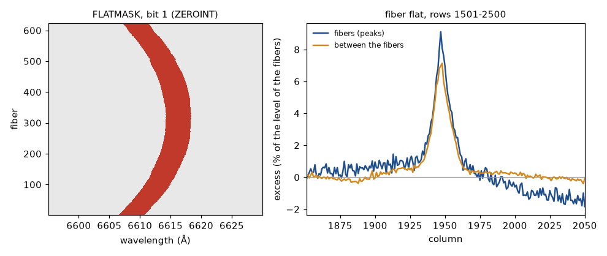
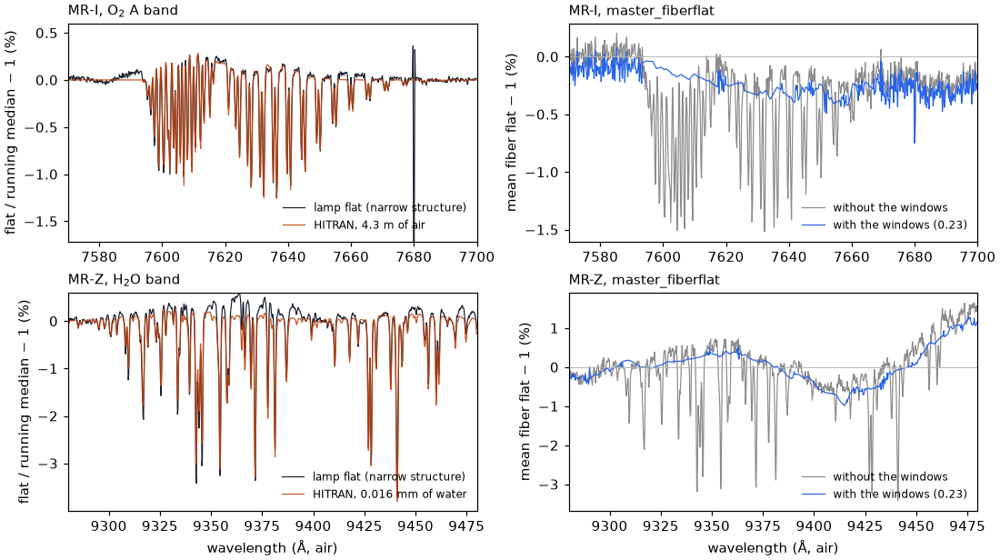
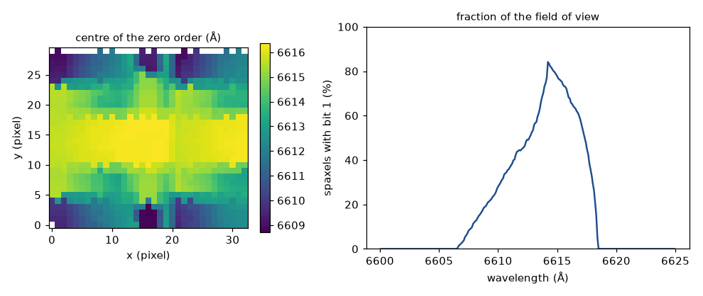

Quality control, flags and masks
Since version 0.30, the calibration recipes of MEGARA DRP check the quality of their products, mark the fibers with problems and keep masks of the pixels that are not corrected as the rest. This section describes these checks, the flags and the masks, and where to find them. The recipes that use each of them are described in Data reduction process.
Quality of the products
Each calibration recipe gives its result a global quality (QC):
GOODAll the fibers are valid.
PARTIALSome fibers are not valid, at most 5 % of them.
BADMore than 5 % of the fibers are not valid.
The fibers that are not expected to have light are not counted: the fiber 623 in the LCB and the fiber 635 in the MOS.
The QC is stored in the file result.json of the results directory, and in
the product itself (the field quality_control of the JSON products). The
processing.log file lists the fibers that are not valid and the fibers
with each flag. For example, for the wavelength calibration of the cookbook:
(megara) $ grep "QC\|flag" obsid3_WaveCalib_HR-R_results/processing.log
All the solutions are valid, so the QC is GOOD: the flags
edge_deviation and interpolated are informational. In the cookbook
data, all the calibrations are GOOD.
When numina searches for a calibration in the registry of the reductions,
the products with QC BAD are not used. A product copied by hand to the
calibration tree is used whatever its QC. Check the QC of each calibration
before reducing the science observations: a BAD calibration usually means
that the inputs, or the parameters, have to be reviewed.
Trace map
The recipe MegaraTraceMap gives each trace these flags:
weakThe peak of the fiber in the reference column is much weaker than those of its neighbours. It is informational: the trace is valid.
truncatedThe trace does not reach the borders of the useful region of the detector.
not_completedThe trace is truncated, and it could not be completed with the shape of the traces of the neighbouring fibers (see the parameter
complete_tracesin Tracing fibers). The trace is not valid.crossingThe trace comes closer than half the usual distance to the trace of the next fiber. Both traces are not valid.
A trace with coefficients that are not finite is not valid either. The fibers
that are not found in the reference column are listed in error_fitting.
The invalid traces are not extracted by the later recipes.
Model map
The recipe MegaraModelMap checks the geometry of the profiles fitted to the fibers. A fiber is flagged when:
crossingIts centre comes closer to the centre of the next fiber than half the usual distance between fibers.
not_parallelIts centre is not parallel to the centres of its neighbours in the same pseudo-slit box (at the border of a box, the only neighbour in the box is used).
width_not_smoothIts width (the sigma of the profile) does not vary smoothly as those of its neighbours. The width grows smoothly towards the borders of the detector, both along the rows and along the columns.
amplitude_not_smoothIts amplitude does not vary smoothly along the detector.
The amplitude is not compared between fibers: a fiber can be fainter than its
neighbours. The flagged fibers are not used as neighbours in the checks of
the others. The QC of the model map is PARTIAL if some fibers are flagged
and BAD if more than 5 % of them are.
Wavelength calibration
The recipe MegaraArcCalibration gives each wavelength solution these flags:
high_residualThe residual of the fit is larger than 0.5 pixels. The solution is not valid.
deviantIn the interior of the detector, the wavelengths of the solution differ by more than 4 pixels from the median of those of the 5 fibers at each side. The solution is not valid.
edge_deviationThe solution differs by more only at the borders of the detector, where it extrapolates beyond the lines. It is informational.
not_refinedThe solution is that of the first pass, it was not refined with all the lines.
interpolatedThe coefficients of the first pass of this fiber did not follow the smooth variation of the coefficients with the fiber number, and the refinement started from the coefficients interpolated from the other fibers. It is informational. These fibers are marked with red circles in the plots of
wavecal_iter1.pdfandwavecal_iter2.pdf.
The fibers where no line is identified are listed in error_fitting, and
the fibers without trace in missing_fibers. The fibers with an invalid
solution, or without solution, are marked as invalid in the header of the
extension FIBERS of the RSS (keyword FIBnnn_V) and they are not
resampled in wavelength: their spectra are 0.
Fiber flat
The recipe MegaraFiberFlatImage gives each fiber these flags, written in
the keywords FIBnnnQF of the extension FIBERS of
master_fiberflat.fits:
faintThe fiber is fainter than the limit used to compute the average spectrum of the fibers. It is informational.
deviantThe shape of the flat of the fiber differs from the median of its neighbours in the pseudo-slit by more than 30 %, in more than 2 % of its pixels. It is informational: in the commissioning data, these are steep features of the spectrum with small differences in the wavelength calibration, and traces off-centre where the signal is weak, and both are also in the science spectra.
brokenThe level of the fiber is not positive, or the flat has values that are not finite. The fiber is not valid.
Masks of the RSS
The RSS images produced by the recipes have two extensions with one value per fiber and wavelength, with the same shape as the RSS:
WLMAPThe spectral coverage of each fiber: 1 in the pixels where the fiber has data after the wavelength calibration, 0 elsewhere (at the ends of the spectral range, and in the fibers without a valid wavelength solution).
FLATMASKThe pixels of each fiber where the fiber flat is interpolated, or does not correct the light. It is a bit mask, the meaning of each bit is in the header of the extension:
Value
Bit
Keyword
Meaning
1
1
ZEROINT
Zero order of the VPH, interpolated in the fiber flat
2
2
ZEROWEAK
Zero order of the VPH, weak, not interpolated
4
3
ABSINT
Absorption of the calibration light, interpolated in the fiber flat
The fiber flat recipe creates FLATMASK in master_fiberflat.fits. The
correction of the fiber flat copies it to the RSS that it corrects (or
combines it with the mask that the RSS already has), so it reaches the
twilight flat, the standard star and the science RSS. The fiber flats made
with earlier versions of the DRP have only the zero order, in an extension
named ZOMASK.
The pixels marked in FLATMASK are not wrong, but they deserve care:
In the zero order of the VPH (bits 1 and 2), the science spectrum has light that is not corrected (see below).
In the absorption windows (bit 4), the fiber flat is interpolated, so the small-scale structure of the flat is not corrected there. These windows coincide with telluric bands: the science spectrum has its own telluric absorption there, which the fiber flat does not correct.
The zero order of the VPH
The zero order of the VPH is diffuse light that reaches the detector in a band of fixed columns, both between the fibers and on them. In the fiber flat it is light added to the spectrum of each fiber, not a change of its response. If it were left in the fiber flat, dividing by it would over-correct those pixels of the science spectra, and the zero order of the science image would still be there.
The fiber flat recipe measures the band in the rows between the traces of
the flat. When it is brighter than 2 % of the level of the fibers, each fiber
is interpolated across it (bit 1 of FLATMASK). When it is between 1 % and
2 %, it is only marked (bit 2). This is controlled by the parameter
remove_zero_order (see the section on the fiber flat in
Data reduction process).
In the commissioning data, the zero order was found in these VPHs:
VPH |
Wavelengths (Å) |
Treatment |
|---|---|---|
MR-V |
5639-5658 |
interpolated (bit 1) |
HR-I |
8607-8623 |
interpolated (bit 1) |
HR-R |
6607-6618 |
interpolated (bit 1) |
MR-G |
5194-5211 |
interpolated (bit 1) |
MR-VR |
6170-6191 |
interpolated (bit 1) |
LR-B |
4761-4810 |
marked (bit 2) |
MR-B |
4793-4811 |
marked (bit 2) |
MR-R |
6594-6620 |
marked (bit 2) |
MR-Z |
9227-9262 |
marked (bit 2) |
The wavelengths are those of all the fibers: the band is at fixed columns, so its wavelength changes along the pseudo-slit, and each fiber covers only a part of the range.


Figure 16b: The zero order of the VPH in the fiber flat of the cookbook
(HR-R). Left: bit 1 of FLATMASK in master_fiberflat.fits, for each
fiber. The band covers about 4 Å in each fiber, between 6607 and 6618 Å,
and its wavelength changes along the pseudo-slit. Right: excess of light
around the columns of the zero order in the reduced_image.fits of the
fiber flat, at the peaks of the fibers and between them (rows 1501 to
2500), relative to the level of the fibers. The excess is similar in both:
the zero order is light added to the fibers.
The zero order is not removed from the science images. The twilight flat recipe leaves it out of the region used to normalize the fibers.
Telluric absorption in the calibration images
The light of the calibration lamps crosses several metres of air before it reaches the fibers (about 4 m, estimated from the depth of the O2 bands in the flats of the commissioning). The images of the lamps have therefore telluric absorption, as the observations of the sky: the bands of O2 (the A band at 7600 Å, the B band at 6870 Å) and of H2O (around 7200, 8200 and 9300 Å). The spectrum of the halogen lamps also has the Na D lines (5890 and 5896 Å).
The absorption is weak, but it is not negligible. In the mean fiber flat of the commissioning data, the deepest bands were H2O at 9300 Å (3.0 % in LR-Z, 3.5 % in MR-Z), the O2 A band (1.2 % in MR-I) and Na D (0.9 % in MR-VR). The water bands change from night to night with the humidity of the air.
The lines of the flats are those of the air: a transmission computed line by line with HITRAN for a few metres of air follows them one by one (Figure 16c). The O2 A and B bands, whose strength differs by a factor of about 15, give the same path, 3 to 4.7 m, in five sets of flats taken with different VPHs.


Figure 16c: Telluric absorption in the flats of the commissioning (2017).
Left: narrow structure of the mean flat of the halogen lamps (the flat
divided by its running median of 25 Å, black), and the transmission of a
path of air computed with HITRAN and fitted to it (orange): 4.3 m of air
for the O2 A band in MR-I, and 0.016 mm of precipitable water for
the H2O band at 9300 Å in MR-Z. Right: median of the fibers of
master_fiberflat.fits minus 1, without the absorption windows (grey),
and with them, as in MEGARA DRP 0.30 (blue).
These absorptions are not part of the response of the instrument. If they were left in the fiber flat, dividing by it would add false emission features to the science spectra, in the same windows where the science spectra have their own telluric absorption (with a different airmass and water content), which has to be corrected later, with a telluric standard.
For this reason, the fiber flat recipe masks the telluric absorption of the
calibration light: it interpolates the flat of each fiber across the
windows of the absorptions (see below), and marks them with bit 4 of
FLATMASK (see Masks of the RSS). With the interpolation, the deepest
residual in the commissioning flats is below 0.5 %. The windows of the
cookbook data (HR-R, 6400-6800 Å) do not include any band, so its
FLATMASK has no bit 4.
Absorption windows
Two tables of windows, distributed with the DRP, are skipped when smooth curves are fitted to the spectra:
flat_absorption_windows.ecsvThe telluric absorption of the light of the calibration lamps in its path through the air (O2 and H2O lines) and the Na D lines, for the resolution of each family of VPHs (LR, MR and HR). The lines are computed with HITRAN for 4 m of air with 0.03 mm of precipitable water, and each window covers the wavelengths where the absorption is deeper than 0.1 % at the resolution of the family, grown by one resolution element. The fiber flat recipe interpolates the flat of each fiber across them (parameter
skip_absorption_windows), and marks them with bit 4 ofFLATMASK.sensitivity_skip_windows.ecsvThe telluric bands deeper than 3 % at the resolution of the LR VPHs, computed from a model of the transmission of the atmosphere (ESO SkyCalc), and the strong lines of the standard stars (Balmer, Ca II H and K, the Ca II triplet and the Paschen lines). The standard star recipes skip them when they smooth the sensitivity (parameter
skip_sensitivity_windows). Other windows can be added withextra_skip_windows.
The sensitivity keeps the telluric absorption of the standard star in the broad H2O band beyond 9250 Å, at the red end of LR-Z: there, the fall of the response of the instrument cannot be separated from the absorption with a single standard star.
Masks in the cubes
The tool megaradrp-cube converts the extensions WLMAP and
FLATMASK of the RSS to the geometry of the cube (wavelength, y, x), with
the WCS of the cube:
WLMAPis 1 in the pixels of the cube inside the field of view where the fibers without data contribute at most 1 % of the value, and 0 elsewhere.FLATMASKhas in each pixel the bits of the fibers that contribute more than 1 % of its value.
Since the zero order of the VPH is at fixed columns of the detector, its
wavelength changes from fiber to fiber. In the cube it is not a plane, but a
band whose wavelength changes across the field of view, with a pattern that
follows the position of the fibers in the pseudo-slit (Figure 16d). Use
FLATMASK to find it before interpreting a spatial structure at those
wavelengths.
(megara) $ megaradrp-cube -p 0.4 -o cube_M15.fits \
obsid8_LcbImage_HR-R_M15_results/final_rss.fits


Figure 16d: Bit 1 of FLATMASK in the cube of M15 (nearest
neighbour, 0.4 arcsec pixels). Left: mean wavelength of the planes flagged
in each spaxel. It goes from 6609 Å at the top and bottom of the field of
view to 6616 Å at its centre, following the position of the fibers in the
pseudo-slit. Right: fraction of the spaxels of the field of view flagged in
each plane. No plane is flagged in the whole field of view.